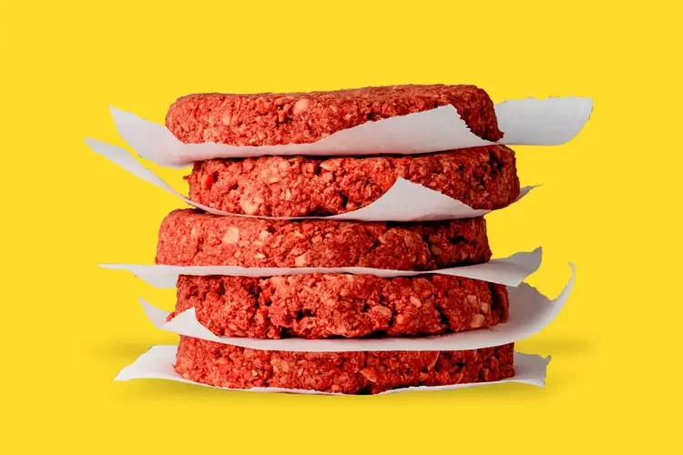

A nova era das carnes
Empresas do mundo todo estão fazendo carnes feitas a base de plantas. Uma das principais,é a Impossible foods, que é a precursora, fazendo diversas outras empresas a ingressarem nesse ramo do mercado.

Fundada em 2011 por Patrick O. Brown, empresa americana, a missão da empresa é reduzir o impacto ambiental da produção de alimentos. A “Impossible Foods” é conhecida por seu hambúrguer que é projetado para parecer e ter o sabor de uma carne bovina, mas feito de ingredientes vegetais. Eles utilizam leghemoglobina, que contém heme, uma molécula que tem em todas plantas e animais, ela que dá o sabor da carne ao ser cozida, e também faz com que a carne vegetal "sangre".
Muitos cientistas e professores de universidades falam que a molécula heme pode trazer complicações para as pessoas, como o Robert Turesky, professor da Universidade de Minnesota. Ele fala que aqueles que comem carne vermelha correm risco de câncer de cólon, e o heme é o responsável por isso, pois é ele que dáa cor vermelha a carne.
Porém de acordo com a diretora de marca da TPB, com bacharelado em jornalismo e história, Rachel Konrad: "O consumo do Impossible Burger é totalmente seguro. A heme do Impossible Burger é idêntica à heme que os seres humanos consomem há centenas de milhares de anos na carne. Nada é mais importante para a Impossible Foods do que a saúde e a segurança de nossos clientes."
Outros benefícios que a empresa oferece é a contribuição para a redução da demanda por carne convencional, o que pode resultarem menor uso de recursos naturais e emissões de gases de efeito estufa. E também causa uma diminuição no uso de terras e água, já que não precisa ter grandes fazendas para abrigar animais, e não precise alimentar grandes quantidades de animais.
Ao longo dos seus 12 anos, a empresa atraiu investimentos significativos e gerou interesse em alternativas de proteína vegetal. Fazendo com que apareçam muitas outras empresas, assim competindo pelo espaço. Porém como a pecuária em si, é uma grande fonte de renda e emprego, acaba que alternativas à base de plantas, faz com que essas empresas passem por grandes sufocos econômicos.